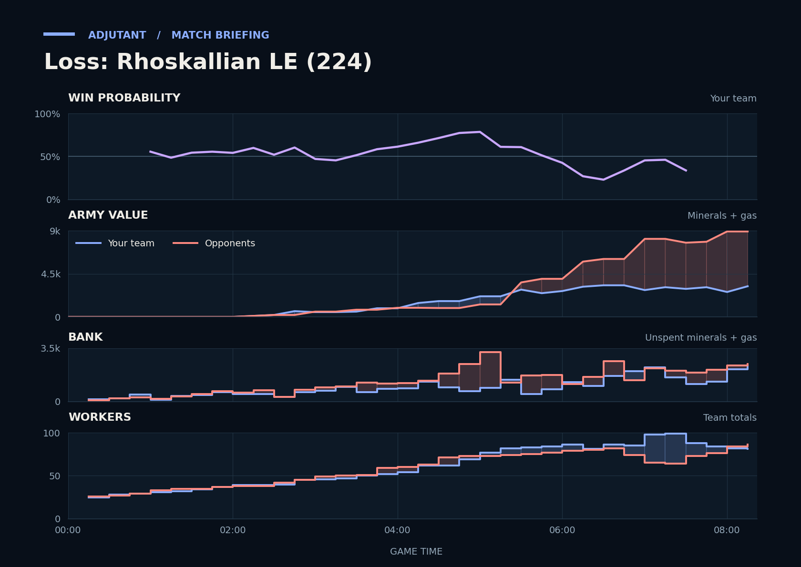

Loss: Rhoskallian LE (224)
Provisional debrief. The full report (timeline, insights and analysis) is being generated.

**Loss.** You lost because mewtwo had 4.7x TakeTheTip's army value going into the last fight at TakeTheTip's main and natural.
**Why**
- 3:15–4:45: Your army value led, but mewtwo had more workers and income, then about twice TakeTheTip's army by 6:00.
- 5:00–6:15: mewtwo's Mutalisks lifted their army value to about 5,800, far above yours, the gap that decided the last fight.
- 7:15–8:21: mewtwo's Mutalisks killed 29 Drones and the main Lair; Scallop's army was not in the fight, gg followed.